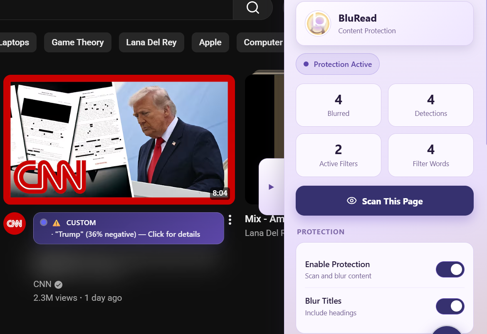
BluRead active on CNN — harmful content detected and blurred in real time · Screenshot for research/demo purposes
The Problem
Digital environments are engineered to prioritize high-arousal, negative content because it captures attention — regardless of the cost to mental well-being. According to Vasterman (2018), the repetitive cycle of "media-hyped" crises measurably increases public anxiety. BluRead gives users the tools to push back.
Concept & Ideation
We started with a simple question: what if the browser itself could act as a "digital shield"? Early sketches explored the extension popup interface — a protection toggle, a negativity sensitivity slider, and keyword-based blurring that activates as you browse.
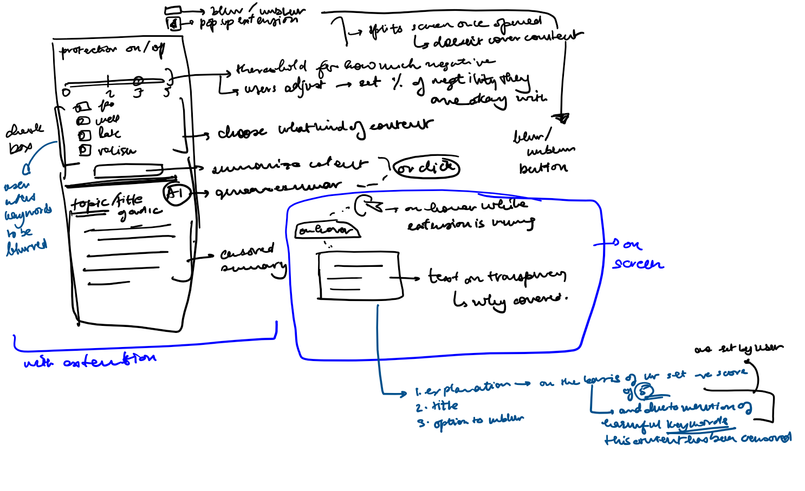
Initial wireframe sketches · © Angela Shen
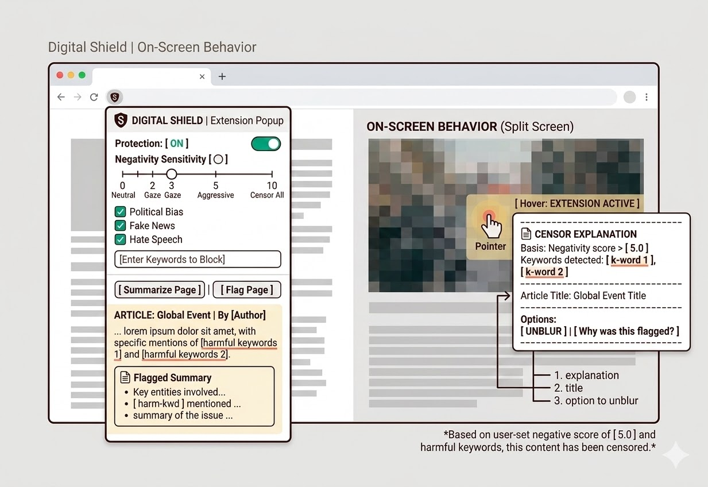
AI-assisted concept rendering · © Angela Shen
Design Iterations
The first prototype surfaced a critical issue immediately — the UI was far too light against busy news pages, making the extension feel invisible and untrustworthy. We ran a series of rapid color and contrast iterations to find a palette that felt calm but authoritative.
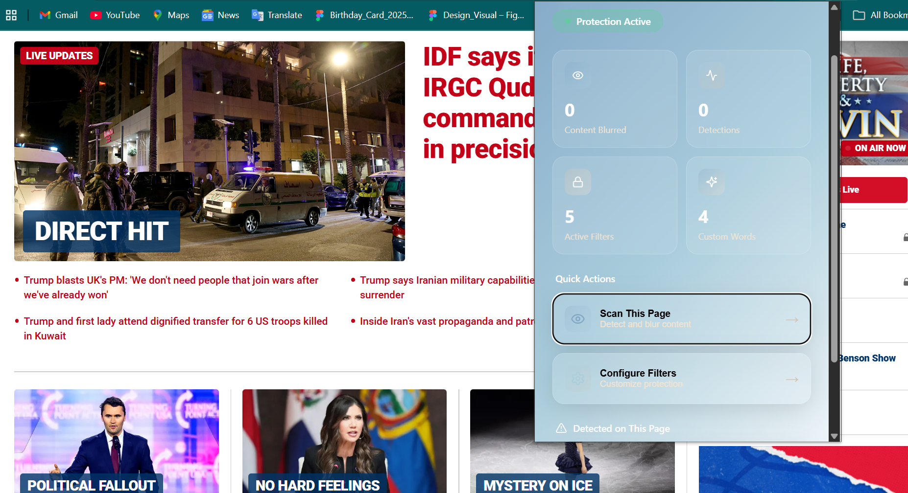
Iteration 1 — too light, poor contrast on real news pages · © Angela Shen
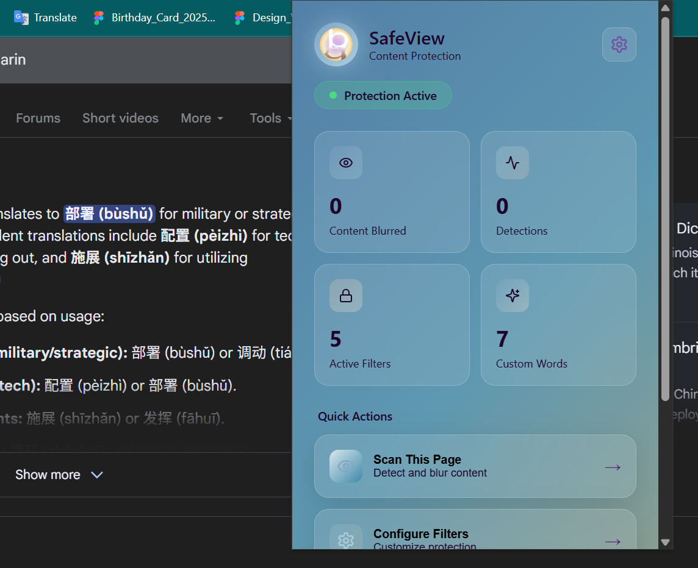
Light blue / dark blue palette test · © Angela Shen
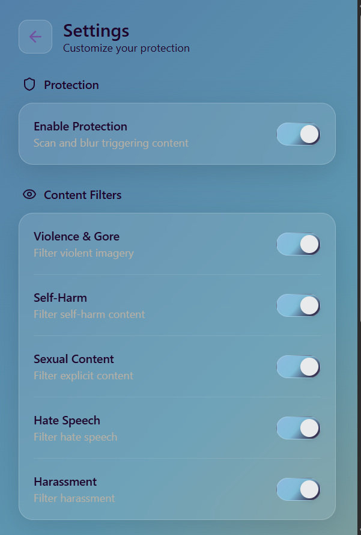
Settings panel — content category toggles · © Angela Shen
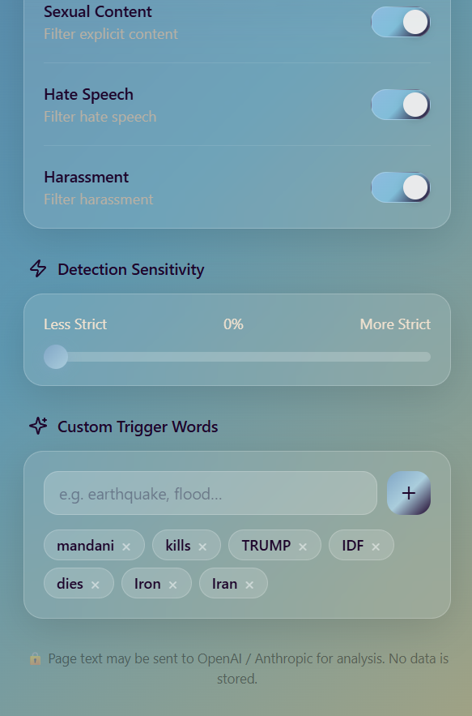
Detection sensitivity + custom keyword input · © Angela Shen
Refining the Feature Set
As the interface stabilized, we shifted focus to the core filtering logic — ensuring flagged content was surfaced clearly, and that users had granular control without feeling overwhelmed. We tested on high-volume news sites (Fox News, BBC, CNN) to validate performance and readability.
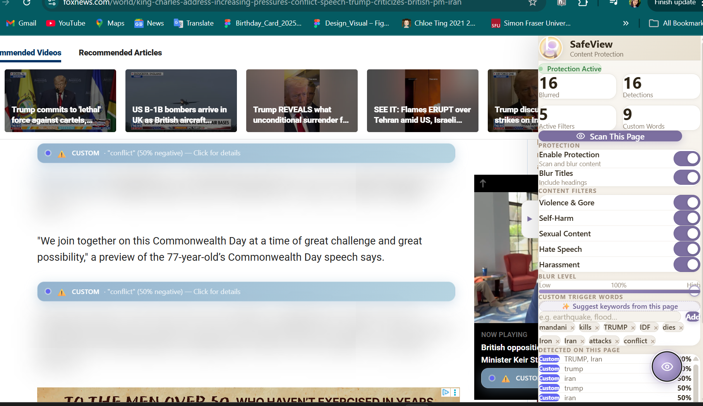
Iteration 2 — flagged content labelled inline, filters panel open · © Angela Shen
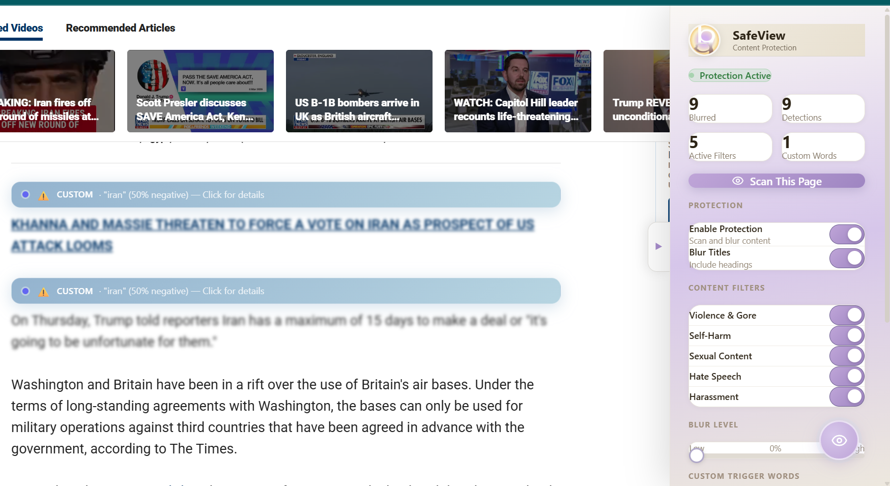
Iteration 3 — live detection counts added to the dashboard · © Angela Shen
Final Design
The final design consolidated everything into a clean, purple-accented "BluRead" brand. The extension sidebar now shows a live count of blurred items, a blur intensity slider, category toggles, and an AI-assisted keyword suggestion tool — all in a compact panel that never competes with the page content.
Live demo — BluRead filtering content in real time · © Angela Shen
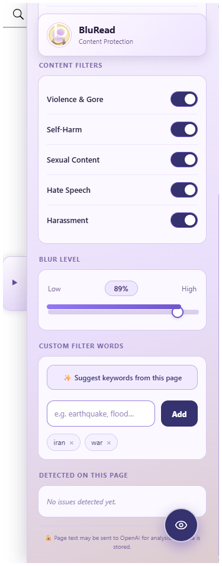
Final sidebar — toggles, blur level, keyword input · © Angela Shen
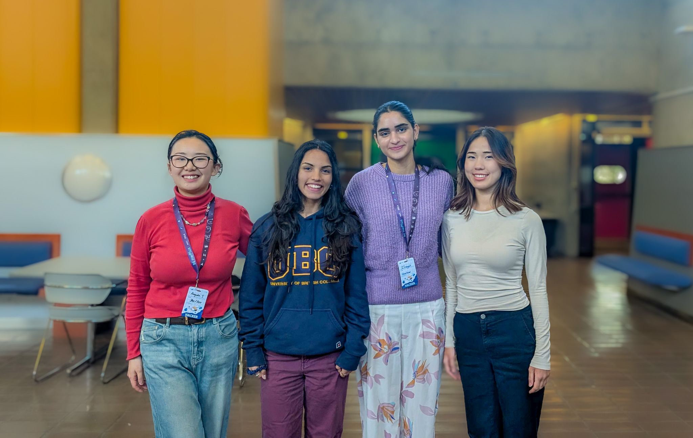
The BluRead team — four designers and developers tackling online content overload at the hackathon
Key Outcomes
Zero-latency filtering on news-heavy pages. Privacy-first architecture: all preferences stored locally, no browsing data transmitted to any server. AI-assisted keyword suggestion (OpenAI) helps users identify harmful patterns they hadn't thought to block — without compromising their data. A model for user-controlled mental wellness tools where privacy and capability aren't trade-offs.
🏆 cmd-f 2026 — Winner, UBC CS Project Hub
BluRead was selected as a winner at cmd-f 2026, UBC's annual hackathon hosted by the CS student union. Recognition for the privacy-first approach to digital wellness and the technical execution of real-time content filtering.